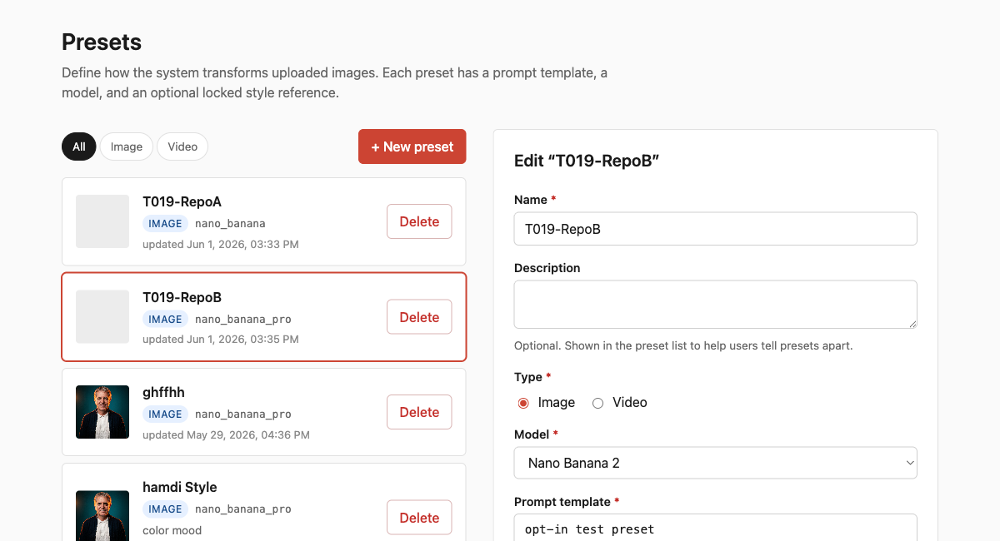
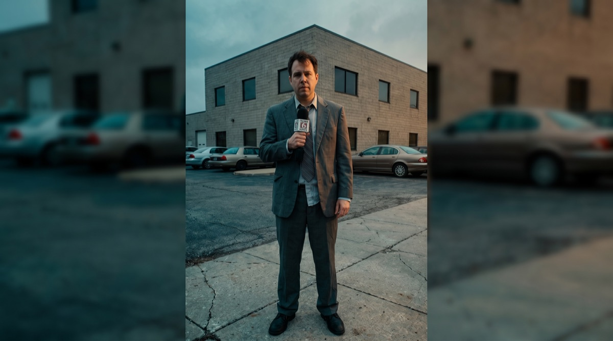
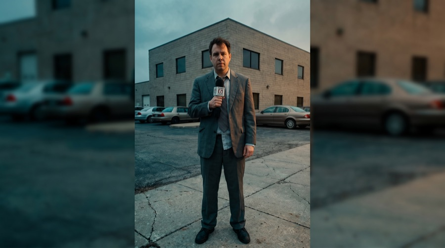
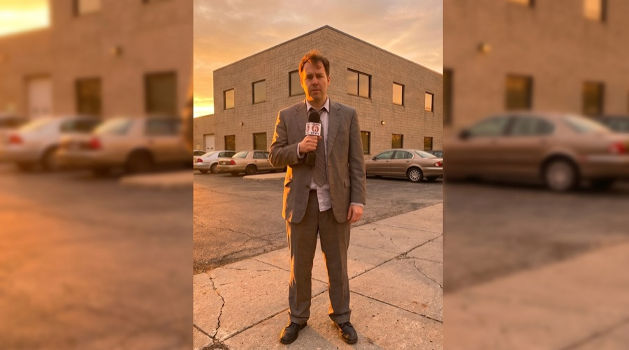
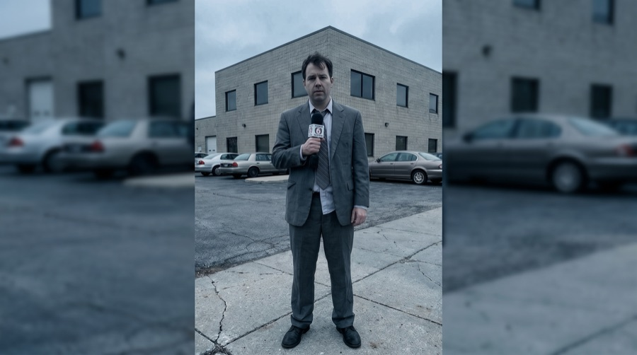
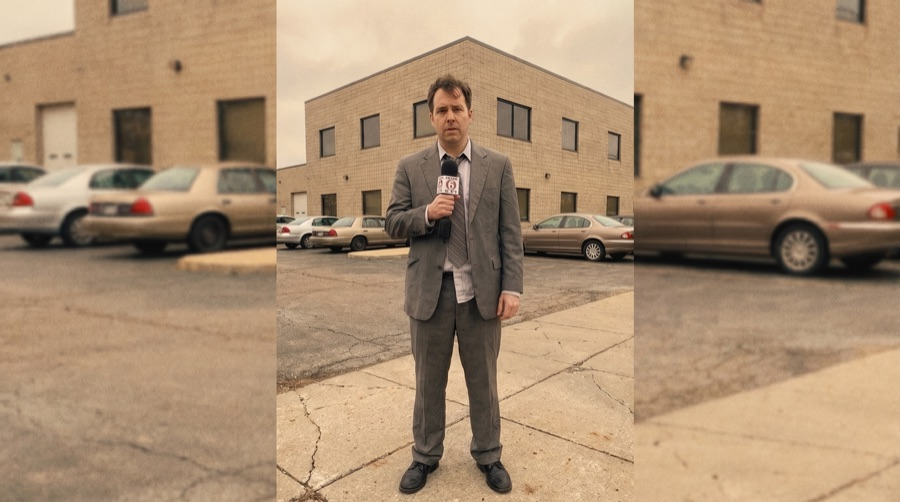

See what it does.
Pick a preset, and the tool transforms any image — in seconds.
One preset. One consistent look.
A "preset" is a saved style. Define the look once — then apply it to any image, the same way every time. The team creates and manages its own presets; no developer needed.

Where presets are created and managed.
Preset — Upscale
Low-resolution in. Broadcast-resolution out.
A soft, low-res portrait restored to sharp broadcast quality — same person, recovered detail. Drag to compare.
Drag the handle to compare
It works on any face.
Anchor headshot
Studio portrait
Preset — Cinematic
An ordinary shot becomes a cinematic frame.
A flat phone snapshot, re-graded into a cinematic broadcast look — same scene, transformed mood. Drag to compare.

Drag the handle to compare
One shot, many looks.
The same frame, through different named presets.




Upload. Pick a preset. On air.
Real results in seconds — on the channel's own tools.